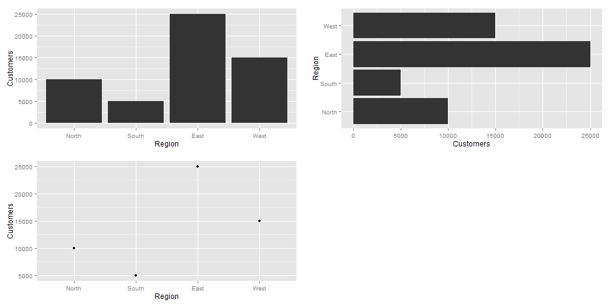
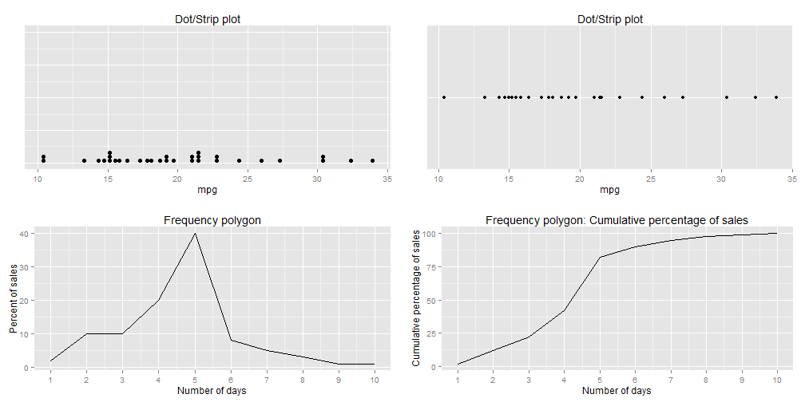

- points
- lines
- bars
- boxes
- shapes with varying 2-D areas
- shapes with varying color intensity
Variations in Graphs
Vivek Patil, Ph.D.
Associate Professor of Marketing
Representation of quantitative values
Encoding Categorical Variables
- 2D position
- Hue
- Point Shape
- Fill pattern
- Line Style
Relationships usually displayed in graphs
- Time Series: Changes in variable(s) over time (Change, rise, increase, fluctuate, grow, decline, decrease, trend)
- Ranking (larger/smaller/equal to/greater/lesser)
- Part-to-whole (rate/percent/share of total/accounts for n percent)
- Deviation (absolute/percentage/rate of deviations from a reference value,)
- Distribution (frequency, distribution, range, concentration, normal)
- Correlation (how variables covary - increases/decreases/changes with, caused by, affected by)
- Geospatial (spatial, geographical - county/city/region/state/...)
- Nominal comparison (simple comparison of categorical variables - alphabetical/ascending/descending)
Nominal Comparisons

Time Series
Ranking

Part-to-Whole

Part-to-Whole
Pie-charts, for their disadvantages, are easily recognized. Can use bars close to each other.

Deviation Designs

Studying Distributions

More distributions

Correlations

Geo-Spatial Designs

Geo-Spatial Designs
Geo-Spatial Designs

Geo-Spatial Designs